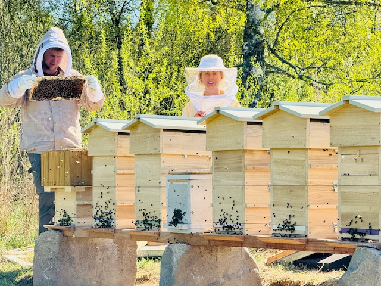

Ze včelnice
Aus dem Bienenstock
From the apiary
Zápisky
ze sezóny
Notizen
aus der Saison
Notes
from the season

Březen 2026
März 2026
March 2026
První včelstva přišla do Slepičích hor
Die ersten Völker kommen in die Hühnerberge
The first colonies arrive in Slepičí Hory
Dubnového rána jsme vynesli první dva Warré úly na kraj lesa nad Kaplici. Tiše jsme otevřeli česna a sledovali, jak se včely poprvé rozletěly do krajiny, která se od teď stane jejich domovem.
An einem Aprilmorgen trugen wir die ersten zwei Warré-Beuten an den Waldrand über Kaplice. Wir öffneten die Fluglöcher und beobachteten, wie die Bienen zum ersten Mal in die Landschaft ausflogen, die nun ihr Zuhause werden soll.
On an April morning we carried the first two Warré hives to the forest edge above Kaplice. We quietly opened the entrances and watched as the bees flew out for the first time into the landscape that would from now on be their home.

Duben 2026
April 2026
April 2026
Co je vlastně včelaření ve Warré úlu?
Was ist eigentlich Imkerei in der Warré-Beute?
What is beekeeping in a Warré hive, really?
Abbé Warré strávil desítky let hledáním úlu, který by co nejvíce připomínal přirozené dutiny stromů. Výsledkem je jednoduchá konstrukce, ve které včely staví shora dolů — tak, jak to dělaly miliony let před námi.
Abbé Warré verbrachte Jahrzehnte damit, eine Beute zu finden, die natürlichen Baumhöhlen so nah wie möglich kommt. Das Ergebnis ist eine einfache Konstruktion, in der Bienen von oben nach unten bauen — so wie sie es Millionen von Jahren vor uns getan haben.
Abbé Warré spent decades searching for a hive that would come as close as possible to natural tree cavities. The result is a simple design in which bees build from top to bottom — just as they have done for millions of years before us.

Květen 2026
Mai 2026
May 2026
Včely a Slow Food — nejde o výnos
Bienen und Slow Food — es geht nicht um den Ertrag
Bees and Slow Food — it's not about yield
Spolupracujeme s jihočeskou sítí Slow Food na společném cíli: zdravé včely v kulturní krajině. Ne maximum medu, ale maximum smyslu. Med jako doklad toho, že krajina ještě žije.
Wir arbeiten mit dem südböhmischen Slow-Food-Netzwerk an einem gemeinsamen Ziel: gesunde Bienen in der Kulturlandschaft. Nicht maximaler Honig, sondern maximaler Sinn. Honig als Zeugnis, dass die Landschaft noch lebt.
We work with the South Bohemian Slow Food network towards a shared goal: healthy bees in a living landscape. Not maximum honey, but maximum meaning. Honey as evidence that the land is still alive.

Červen 2026
Juni 2026
June 2026
Proč necháváme včely v klidu
Warum wir die Bienen in Ruhe lassen
Why we leave the bees in peace
Každé otevření úlu je stres. Teplota klesne, feromonová komunikace se naruší, kolonie potřebuje hodiny, aby se vrátila do rovnováhy. Naučili jsme se odolávat pokušení zasahovat — a tady je proč.
Jedes Öffnen des Stocks bedeutet Stress. Die Temperatur sinkt, die Pheromonkommunikation wird gestört, das Volk braucht Stunden, um ins Gleichgewicht zurückzufinden. Wir haben gelernt, dem Drang zum Eingreifen zu widerstehen — und hier ist der Grund.
Every hive opening is stress. Temperature drops, pheromone communication is disrupted, the colony needs hours to return to balance. We have learned to resist the temptation to intervene — and here is why.